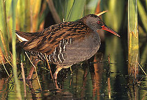
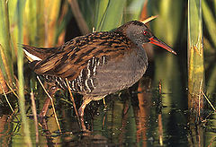

| Water Rail | |
|---|---|
|  | |
| Conservation status | |
| Binomial name | |
| Rallus aquaticus Linnaeus, 1758 |
| Water Rail | |
|---|---|
|  | |
| Conservation status | |
| Binomial name | |
| Rallus aquaticus Linnaeus, 1758 |
The Water Rail or European Water Rail[2] (Rallus aquaticus) is a small wetland bird of the rail family.
Its breeding habitat is marshes and reedbeds across Europe and Asia. It nests in a dry location in marsh vegetation, laying up to a dozen eggs. Northernmost and eastern populations are migratory, but Water Rails are permanent residents in western and southern Europe, with numbers augmented by migrants in winter.
Adults are 23–26 cm long, and have mainly brown upperparts and blue-grey underparts, with black barring on the flanks. The body is flattened laterally to allow easier passage through the reeds. They have long toes, a short tail and a long (3-4.5 cm) slim reddish bill. Legs are yellowish.
Immature birds are similar to the adults, but the blue-grey is replaced by buff. The downy chicks are black, as with all rails.
These birds probe with their bill in mud or shallow water, also picking up food by sight. They eat insects, seeds, berries, rodents and smaller birds.
Water Rails are very secretive in the breeding season, and are then mostly heard rather than seen. They are noisy birds, with a rich variety of sounds including a distinctive pig-like squeal, known as "sharming"[3]. They are easier to see in winter, especially if freezing conditions push them to the edge of the reedbeds.
The South Asian race indicus differs slightly in morphology and strongly in vocalisations; Rasmussen and Anderton (2005) propose that this taxon be treated as a separate species, Eastern Water Rail.

_cropped.jpg){kind=link}
{kind=link}